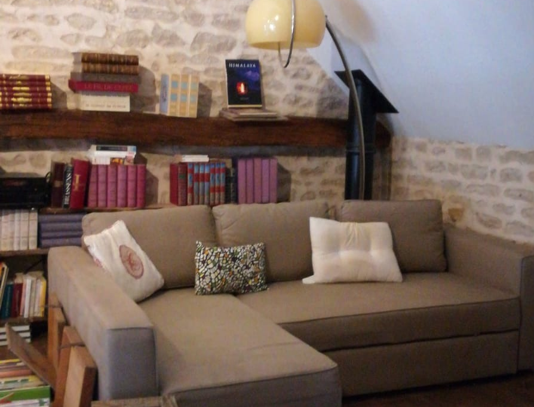

What to see, what to do
The house and its surroundings are full of things to do and see. You will be able to rest, to move, to visit or to have fun!
In the House
Rest or have fun with the activities to do at the house
Jacuzzi
In the garden under an arbour, 9:00am to 10:30am and 5:00pm to 8:00, privatization possible

Library and film library
Take the time to read or watch a movie undisturbed on the mezzanine floor
Games library
Relax and have fun around a good game
Living room
Relax near the chimney or the stove
On the property
Discover the countryside garden, the vegetables we grow, the creek and the chapel
Vegetable garden
Discover what we grow and relax in our garden
La Vandenesse
In the back of the land, to cool children's feet and appease parents mind!
Saint-Gervais Chapel
Chapel of the 15th century in the back of the land
Garden
Relax and enjoy nature in the Burgundy countryside
To do in the vicinity
Discover the treasures of Burgundy
Nautical base of Panthier
8km far
Golf and Château de Chailly
20 minutes away
Burgundy vineyards
Less than 30 minutes away
Les Anis de Flavigny
Traditional Burgundy sweets, 40 minutes away
Canal de Bourgogne
Alone or with a guide, discover how bargemen once lived
Bicycle tour
Cyclotourists? Simple hike around the Canal de Bourgogne ?
Château de Commarin
10 minutes away
Morvan natural park
45 minutes away
Alesia
French History only 40 minutes away
Aerodrome Pouilly-Maconge
With just a 10-minute drive, have the opportunity to fly over Burgundy!
Cities and villages to visit
Come and visit Burgundy's most beautiful places
Dijon
42 km far
Châteauneuf-en-Auxois
7 km far, named one of the 157 "Most Beautiful French villages"
Beaune
30 minutes away
Autun
45 minutes away
Vézelay
1h away
Saulieu
30 minutes away